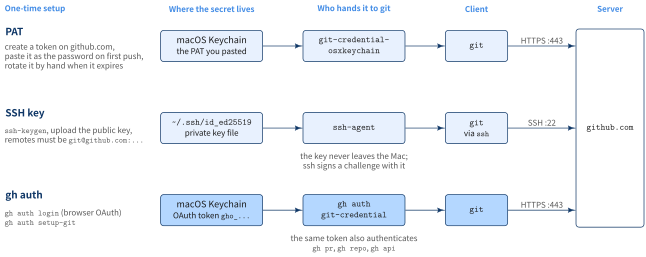
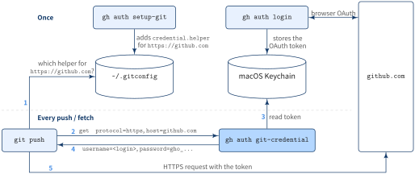

- Install Git and GitHub CLI with Homebrew, log in once with
gh auth login, and letgh auth setup-gitregister gh as Git’s credential helper - No PAT to copy, no SSH key to upload: the OAuth token lives in the macOS Keychain, and
git pushasks gh for it on every HTTPS request --git-protocol httpstells gh to usehttps://URLs whenever it runs Git for you; it does not rewrite remotes you already have
brew install git
brew install gh
gh auth login --git-protocol https
gh auth setup-git
gh auth status🎯 Goal
🔎 Objective
You set up a new Mac and clone a private repository. The classic options are a personal access token (PAT) pasted as the password, or an SSH key registered on github.com. Both take a trip to the browser, and the PAT comes back to bite you when it expires.
GitHub CLI already holds a token after gh auth login. The setup below hands that same token to git, so one login covers both gh pr create and git push.
Solution: using gh auth
- Install Git
- Install GitHub CLI
- Log in to GitHub
- Use GitHub CLI for Git authentication
- Check the authentication state
Step 0: install Git
brew install gitmacOS ships /usr/bin/git with the Xcode Command Line Tools. Homebrew installs a newer one under /opt/homebrew/bin (Apple Silicon) or /usr/local/bin (Intel). Make sure the shell picks the Homebrew one:
which git # /opt/homebrew/bin/git
git --versionStep 1: install GitHub CLI
brew install ghStep 2: log in to GitHub
gh auth login --git-protocol httpsgh asks a few questions. Pick GitHub.com, answer Yes to “Authenticate Git with your GitHub credentials?”, and choose the web browser. gh prints a one-time code, opens https://github.com/login/device, and you paste the code there to authorize GitHub CLI.
? Where do you use GitHub? GitHub.com
? Authenticate Git with your GitHub credentials? Yes
? How would you like to authenticate GitHub CLI? Login with a web browser
! First copy your one-time code: XXXX-XXXX
Press Enter to open https://github.com/login/device in your browser...
✓ Authentication complete.
- gh config set -h github.com git_protocol https
✓ Configured git protocol
✓ Logged in as <your-login>The resulting OAuth token (prefix gho_) goes into the macOS Keychain, not into a plain-text file.
Step 3: use GitHub CLI for Git authentication
gh auth setup-gitThis adds the following to ~/.gitconfig:
[credential "https://github.com"]
helper =
helper = !/opt/homebrew/bin/gh auth git-credential
[credential "https://gist.github.com"]
helper =
helper = !/opt/homebrew/bin/gh auth git-credentialAnswering Yes in Step 2 already writes the same lines. Running gh auth setup-git explicitly is harmless and covers the case where you answered No, or logged in with --with-token.
Step 4: check the authentication state
gh auth statusgithub.com
✓ Logged in to github.com account <your-login> (keyring)
- Active account: true
- Git operations protocol: https
- Token: gho_************************************
- Token scopes: 'gist', 'read:org', 'repo'(keyring) means the token is in the macOS Keychain. Git operations protocol: https is the value set by --git-protocol. To confirm git will ask gh, list the helpers for github.com and where each one comes from:
git config --show-origin --get-all credential.https://github.com.helperPAT vs SSH vs gh auth
All three end with git proving to github.com who you are. They differ in what you set up, where the secret sits, and what hands it to git.

| PAT | SSH key | gh auth | |
|---|---|---|---|
| Setup | Create a token on github.com, paste it at the first push | ssh-keygen, upload the public key |
gh auth login + gh auth setup-git |
| Remote URL | https://github.com/... |
git@github.com:... |
https://github.com/... |
| Port | 443 | 22 (often blocked on corporate networks) | 443 |
| Expiry | Whatever you chose; rotate by hand | None | Managed by gh; log in again to replace |
Also authenticates gh |
No | No | Yes, same token |
The PAT and gh auth rows look alike on the wire: both send a token over HTTPS. The difference is who produced the token and who keeps it. With a PAT you create it, copy it, and the osxkeychain helper caches whatever you pasted. With gh auth, gh obtains the token through the browser and gh itself answers when git asks.
How gh auth plugs into git
git never talks to GitHub CLI directly. It has a generic hook, the credential helper: when an HTTPS remote needs a username and password, git runs the helper configured for that URL and reads the answer from its standard output. gh auth setup-git registers gh auth git-credential as that helper for https://github.com.

Once
gh auth loginruns the browser OAuth flow and stores the token in the macOS Keychaingh auth setup-gitwrites thecredential.helperentry into~/.gitconfig
Every push / fetch
gitlooks up the helper forhttps://github.comin~/.gitconfig- It runs
gh auth git-credential getand writesprotocol=httpsandhost=github.comto its stdin - gh reads the token for that host from the Keychain
- gh prints
username=<your-login>andpassword=gho_... gitsends the HTTPS request with that token
Because gh answers on every request, gh auth login again, or gh auth refresh -s <scope>, takes effect for git immediately. There is no second copy of the token to update.
helper = line
Both Homebrew’s Git and Apple’s Git ship a system-level credential.helper = osxkeychain. Git calls every configured helper in order, so without a reset an old PAT cached in the Keychain could still answer first. An empty helper = clears the list for that URL, leaving gh as the only helper for https://github.com.
What --git-protocol https means
--git-protocol (short form -p) answers one question: when gh runs Git on your behalf, which URL form should it use for this host? The value is saved per host in gh’s config.
gh config get git_protocol -h github.com # https--git-protocol https |
--git-protocol ssh |
|
|---|---|---|
gh repo clone owner/repo |
clones https://github.com/owner/repo.git |
clones git@github.com:owner/repo.git |
gh repo fork --clone, gh repo create --clone |
sets remotes to https:// |
sets remotes to git@ |
Extra step during gh auth login |
offers to set up gh as Git’s credential helper | looks for an SSH key and offers to create and upload one (--skip-ssh-key to skip) |
Passing the flag also skips the “preferred protocol” prompt during login.
It does not change how gh talks to the GitHub API (always HTTPS), and it does not touch plain git clone commands or existing remotes.
A repository cloned earlier as git@github.com:owner/repo.git still goes through SSH after this setup, and fails if you have no SSH key on the new Mac. Check the remote and switch it to HTTPS:
git remote -v
git remote set-url origin https://github.com/<owner>/<repo>.git